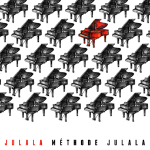

<!doctype html>
<html lang="en">
<head>
  <meta charset="UTF-8">
  <title>Julala's Tuition</title>
  <link rel="stylesheet" href="lib/normalize.css">
  <link href='http://fonts.googleapis.com/css?family=Montez' rel='stylesheet' type='text/css'>
  <link rel="stylesheet" href="css/application.css">
</head>
<body>
  
  <div id="app">
  </div>

  <!-- ======================= -->
  <!-- UNDERSCORE.JS TEMPLATES -->
  <!-- ======================= -->

  <!-- APP VIEW -->

  <script id="appView" type="text/template">
    <div id="navbar">
      <nav>
        <a href="#"><i class="fa fa-home"></i> Home</a>
        <a href="#about"><i class="fa fa-question-circle"></i> About Julala</a>
        <a href="#japanese"><i class="fa fa-comment-o"></i> Japanese Tuition</a>
        <a href="#music"><i class="fa fa-music"></i> Music Tuition</a>
        <a href="#calendar"><i class="fa fa-calendar"></i> Calendar</a>
        <a href="#contact"><i class="fa fa-envelope"></i> Contact</a>
      </nav>
    </div>

    <div id="container">
      <h1>Julala's <span class="color">Tuition</span></h1>

      <div id="content">

        <div id="output">
          <!-- BACKBONE VIEWS RENDERED HERE -->
        </div>

        <p class="legal">93 Made Pty Ltd © 2009-15. All Rights Reserved. ABN 43 130 700 284 (ACN 130 700 284)</p>
      </div> <!-- content -->
    </div> <!-- container -->
  </script>

  <!-- HOME VIEW -->

  <script id="homeView" type="text/template">

    <h2 id="heading">Home</h2>

    <div id="main">
      <div class="tuition-wrapper">
        <div class="welcome pad-btm">
          <span>Welcome to Julala's tuition!</span><br> We provide Piano and Japanese tuition in the Sydney Area
        </div>

        <a class="tuition-link" href="#music">
          <div class="tuition pad-btm">
            <div class="tuition-text">
              <h2>Music Tuition</h2>
              <p>Private and group piano and guitar lessons for students of all ages.</p>
            </div> <!-- tuition-text -->
          </div> <!-- tuition -->
        </a>

        <a class="tuition-link" href="#japanese">
          <div class="tuition">
            <div class="tuition-text">
              <h2>Japanese Tuition</h2>
              <p>Private and group Japanese language lessons for students of all ages.</p>
            </div> <!-- tuition-text -->
          </div> <!-- tuition -->
        </a>
      </div

      ><a href="http://www.methodejulala.com/" target="_blank"
      ><div class="album">
          
          <p>Listen to Julala's innaugural album release</p>
        </div>
      </a>
    </div> <!-- main -->
  </script>

  <!-- ABOUT VIEW -->

  <script id="aboutView" type="text/template">

    <h2 id="heading">About</h2>

    <div id="main">
      <div class="white-box">

        <p><b>Julia Carroll</b> - Head Teacher</p>  

        <p>Julia is the Head Teacher of Julala's Tuition. She has held various positions at educational institutions including the Music Learning Centre, Academy of Information Technology, International School of Music, St Francis of Assisi Regional Primary School and Malabar Public School.</p>

        <p>Julia has formal qualifications in ANZCA and AMEB practical and theory examinations, a Bachelor of Asian Studies (Japanese) and has also studied secondary education at university. She has trained under such personalities as Ros Thrift and Evana Bevan. Julia brings all of her experience, skills and a superior passion for teaching to Julala's Tuition in order to provide the highest quality tuition for her students.</p>

        <p>In recent years Julia has recorded an album of original and unique piano music. She was shortlisted in the 2011 APRA/AMCOS Professional Development Awards and has been gaining attention from various community radio stations for her wonderful whimsical sounds. Please click the album icon to the right if you would like to sample some of Julala’s most recent works.</p>

      </div> <!-- white-box -->
    </div> <!-- main -->
  </script>

  <!-- CALENDAR VIEW -->

  <script id="calendarView" type="text/template">
    <h2 id="heading">Calendar</h2>

    <div id="main">
      <table class="calendar">
        <tr>
          <td>April-May:</td>
          <td>AMEB Piano Examinations</td>
        </tr>
        <tr>
          <td>June:</td>
          <td>Winter Piano Recital</td>
        </tr>
        <tr>
          <td>August:</td>
          <td>AMEB Theory Examinations</td>
        </tr>
        <tr>
          <td>August-September:</td>
          <td>AMEB Piano Examinations</td>
        </tr>
        <tr>
          <td>December:</td>
          <td>Christmas Piano Recital</td>
        </tr>
      </table>
    </div> <!-- main -->
  </script>

  <!-- CONTACT VIEW -->

  <script id="contactView" type="text/template">
    <h2 id="heading">Contact</h2>

    <div id="main">
      <div class="white-box">

        <p>
          <b>Postal Address</b><br>
          Julala's Tuition<br>  
          PO Box 231<br>
          North Ryde BC NSW 1670
        </p>

        <p><b>Email</b><br>
        Head Teacher - Julia Carroll (<a href="mailto:info@julalastuition.com.au">info@julalastuition.com.au)</a></p>

        <p><b>Web</b><br>
        <a href="http://www.julalastuition.com.au">www.julalastuition.com.au</a></p>

      </div> <!-- white-box --> 
    </div> <!-- main -->
  </script>

  <!-- JAPANESE VIEW -->

  <script id="japaneseView" type="text/template">
    <h2 id="heading">Japanese</h2>

    <div id="main">
      <div class="white-box">

        <p>Learning languages is a fun and rewarding way to learn about other cultures and enrich our lives beyond what we already know and experience on a daily basis. Learning a second or third language improves our understanding of our native language and allows us to realise things about our own culture that we may not have recognised before. When learning the Japanese language in particular, we clearly appreciate how language is used to communicate in different social settings such as communicating with friends, co-workers, employers, customers/clients and family. More interestingly, it is also said that knowing two or more languages decreases your chance of developing mental illness like Alzheimer’s later in life – bonus!</p>

        <p>At Julala's Tuition, learning Japanese is both enjoyable and practical as we cater for those who wish to learn for leisure and for those studying at primary, secondary and tertiary levels. Lessons are executed using a variety of materials and often make use of multimedia activities, games, role-plays and the like.</p>

        <p>Julia, our Director, studied Japanese at the Australian National University in Canberra and received her bachelor degree in Asian Studies in 2003. Since then, she has taught both privately and in secondary schools, helping a variety of students gain outstanding results at school and become proficient in conversational Japanese.</p>

        <p>If you are having trouble with any aspect of the Japanese language as you study for your HSC or at university, Julia can help you clearly understand all grammar and kanji so you can achieve the best possible marks for your Japanese course – it’s actually really easy!</p>

        <p>Lessons are available to be conducted within your home, in our St Ives studio or through Skype. Below is a list of our lesson fees for Japanese:</p>

        <ul>
          <li> Private one-on-one tuition:
            <ul>
              <li>$50 for 60 minutes (in studio and using Skype)</li>
              <li>$60 for 60 minutes (in your home)</li>
            </ul>
          </li>
          <li> Group tuition:
            <ul>
              <li>$30 each student for 60 minutes (2 or more students)</li>
            </ul>
          </li>
        </ul>

        <p>If you have any questions or enquiries, you can contact Julala's Tuition on the following:</p>

        <ul>
          <li>Email: <a href="mailto:info@julalastuition.com.au">info@julalastuition.com.au</a></li>
        </ul>

      </div> <!-- white-box -->
    </div> <!-- main -->
  </script>

  <!-- MUSIC VIEW -->

  <script id="musicView" type="text/template">
    <h2 id="heading">Music</h2>

    <div id="main">
      <div class="white-box">

        <p>Julala's Tuition provides high quality piano and theory lessons incorporating a variety of activities which stimulate and motivate each student’s aspiration for learning. Lessons include a variety of activities such as rhythm reading, sight reading, aural exercises, repertoire development, performance training and music theory – all of which encourage the development of a well-rounded musician.</p>

        <p>Learning music has a number of benefits and is a fun and rewarding activity. Playing a musical instrument is a magnificent skill to have and it has the ability to make significant improvements relating to memory, learning and social interactions.</p>

        <p>Music lessons at Julala’s Tuition are often complimented with further fortnightly, monthly or holiday group theory classes. These classes offer an even more fun and social learning environment in which games, trivia, and reward-based study incentives are utilised to encourage even more motivation from our students. For the more serious learner we use these sessions to prepare for examinations. Please email us if you would like further information about the theory component of your child’s piano study.</p>

        <p>Each year we hold at least one piano recital for students to gain performance experience. Not only does this give parents and family the opportunity to see their child perform what they’ve been learning and practicing over a period of time, it also helps develop more confidence and can be a great practice run for those taking exams.</p>

        <p>At Julala's Tuition we cater for each student individually and offer our greatest assistance to be sure that each learner is able to reach their goals to the best of their ability.</p>

        <p>Piano lessons are usually once a week for 30 minutes at Malabar, Paddington or St Ives. Taking lessons within your home is also an option however availability is extremely limited. Please find our fee schedule below.</p>

        <ul>
          <li>Private one-on-one piano tuition
            <ul>
              <li>$35 for 30 minutes</li>
              <li>$52 for 45 minutes</li>
              <li>$70 for 60 minutes</li>
            </ul>
          </li>
          <li>In home lesson (limited availability)
            <ul>
              <li>$45 for 30 minutes</li>
              <li>$62 for 45 minutes </li>
              <li>$80 for 60 minutes</li>
            </ul>
          </li>
        </ul>

        <p>Julala's Tuition follows the NSW school term dates and can offer you flexibility in your scheduling when you need it. Unlike other tuition services, we do not charge you the full lesson fee if you are unable to make it to a lesson. If you are unable to attend a scheduled lesson, we will do our best to offer you an alternate time slot or a make-up lesson at a time convenient for both tutor and student. If we are unable to assist you in making up your missed lesson, we keep your lesson fee as a credit for you to use within 3 months.</p>

        <p>Find out more information about Julala by clicking here.</p>

        <p>If you have any questions or enquiries, you can contact Julala's Tuition on the following:</p>

        <ul>
          <li>Email: <a href="mailto:info@julalastuition.com.au">info@julalastuition.com.au</a></li>
        </ul>

      </div> <!-- white-box -->
    </div> <!-- main -->
  </script>

  <!-- FONT AWESOME -->
  <link href="http://netdna.bootstrapcdn.com/font-awesome/4.1.0/css/font-awesome.min.css" rel="stylesheet">
  <!-- LIBRARIES -->
  <script src="lib/jquery-1.11.1.min.js"></script>
  <script src="lib/underscore-min.js"></script>
  <script src="lib/backbone-min.js"></script>
  <!-- MY JAVASCRIPT -->
  <script src="js/application.js"></script>
</body>
</html>
